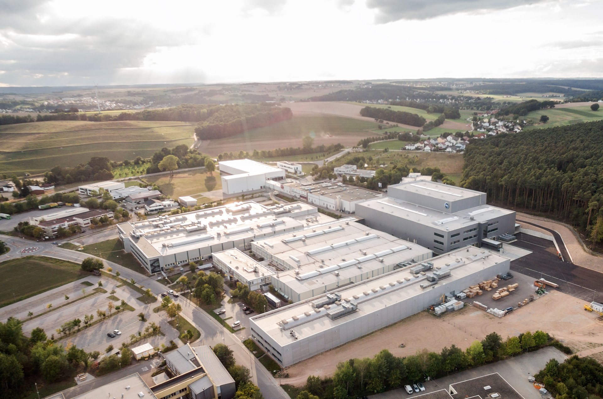
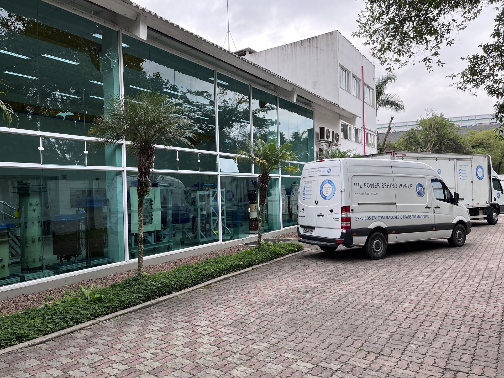
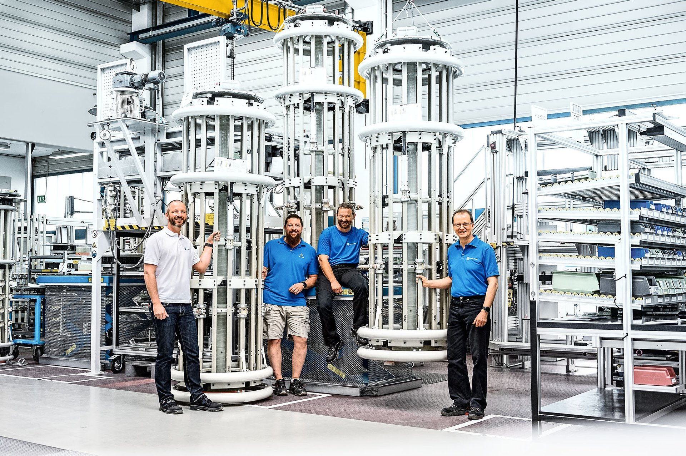

VACUTAP®
Comutadores a vácuo para alta confiabilidade, menor manutenção e desempenho consistente.
Solicitar detalhesMaschinenfabrik Reinhausen no Brasil

MR do Brasil
Soluções para comutadores de derivação sob carga (OLTC), monitoramento, buchas, retrofit e serviços técnicos com o conhecimento global da Reinhausen e atendimento local em Embu das Artes, SP.
40+ anos
Presença local no Brasil
OLTC
Liderança mundial em comutação
SP
Suporte técnico em Embu das Artes
Conheça a MR do Brasil

Suporte local em SP
Base técnica em Embu das Artes para atendimento em comutadores, transformadores e serviços de campo.
Fundada em julho de 1980, a Reinhausen do Brasil foi a primeira subsidiária da Maschinenfabrik Reinhausen. Em Embu das Artes, na Região Metropolitana de São Paulo, a unidade atua como centro de competência regional para vendas técnicas, serviços técnicos, treinamento e suporte a transformadores.
Com mais de 80 profissionais no site, a equipe local apoia as marcas do Grupo Reinhausen e ajuda clientes a manter transformadores operando com desempenho, segurança e disponibilidade.
A MR apoia empresas que operam, fabricam, modernizam ou mantêm transformadores de potência. Na prática, isso inclui comutadores de derivação sob carga (OLTC), sistemas de controle e monitoramento, acessórios, buchas, diagnóstico, retrofit, comissionamento, manutenção, treinamento técnico e suporte às marcas Reinhausen na região.
Para operação e manutenção
Redução de paradas, diagnóstico de condição, suporte de campo e planejamento de manutenção.
Para engenharia e projetos
Especificação técnica, retrofit, modernização, acessórios e suporte para novas aplicações.
Para equipes técnicas
Treinamento, capacitação e transferência de conhecimento para operação mais segura dos ativos.
Para compras e suprimentos
Apoio técnico para selecionar soluções, peças, serviços e escopos compatíveis com a necessidade do ativo.
1980
Primeira subsidiária
A operação brasileira nasceu em julho de 1980 como a primeira subsidiária da Maschinenfabrik Reinhausen.
80+
Profissionais
Equipe local dedicada a vendas técnicas, serviços técnicos, treinamento e suporte regional.
SP
Embu das Artes
Base próxima aos principais polos industriais e de infraestrutura do país.
A unidade brasileira reúne conhecimento técnico, estrutura de atendimento e experiência de campo para apoiar clientes da região em todo o ciclo de vida do transformador: especificação, operação, manutenção, modernização e treinamento.
Vendas técnicas
Apoio para transformar necessidade operacional em escopo técnico adequado.
Serviço técnico
Atendimento especializado para comutadores, transformadores e sistemas associados.
Treinamento
Capacitação para equipes que operam e mantêm ativos críticos.
Falhas recorrentes no OLTC: avaliação técnica, manutenção, peças, diagnóstico e modernização.
Ativos envelhecidos: retrofit para ampliar vida útil e reduzir risco de indisponibilidade.
Projetos novos: apoio na especificação de comutadores, buchas, acessórios, controle e monitoramento.
Equipe em campo: comissionamento, treinamento, suporte técnico e diagnóstico especializado.
Suporte regional: atendimento para clientes que precisam de orientação técnica sobre marcas e soluções Reinhausen.
Dúvidas de especificação: análise inicial para entender aplicação, tensão, criticidade, histórico e necessidade de modernização.
Não. A MR atua tanto em novos projetos quanto em ativos em operação, incluindo manutenção, retrofit, diagnóstico e substituições em campo.
Sim. A unidade brasileira fica em Embu das Artes, SP, e oferece suporte local com acesso ao conhecimento global do Grupo Reinhausen.
Engenharia, manutenção, operação, suprimentos técnicos, fabricantes de transformadores, concessionárias, indústrias eletrointensivas e integradores de projetos.
Não. O formulário ajuda a iniciar a conversa; depois a equipe pode orientar quais informações do transformador, aplicação ou histórico de manutenção serão necessárias.
Sim. Treinamento técnico é uma das frentes da unidade brasileira, ajudando equipes a operar e manter transformadores com mais segurança e previsibilidade.
Sim. A equipe de vendas técnicas pode orientar a definição de escopo, solução, peças ou serviço de acordo com a condição e a criticidade do ativo.
Nossa linha de soluções
Comutadores a vácuo para alta confiabilidade, menor manutenção e desempenho consistente.
Solicitar detalhesMonitoramento e controle inteligente para dados acionáveis, previsibilidade e digitalização.
Solicitar detalhesSoluções em porcelana e silicone para aplicações exigentes de segurança e desempenho elétrico.
Solicitar detalhesModernização para ampliar vida útil, reduzir obsolescência e elevar disponibilidade do ativo.
Solicitar detalhesManutenção, comissionamento, treinamento e diagnóstico com equipe especializada.
Solicitar detalhes
Por que escolher a MR do Brasil
A MR do Brasil combina tecnologia alemã, experiência de campo e suporte próximo para concessionárias, indústrias, EPCs e fabricantes de transformadores.
Suporte local
Atendimento técnico em Embu das Artes, SP, com conhecimento do ambiente elétrico brasileiro.
40+ anos no Brasil
Histórico em operações críticas de transmissão, distribuição, geração e grandes plantas industriais.
Menos tempo de parada
Retrofit, monitoramento e manutenção orientados à disponibilidade, à previsibilidade e à redução do custo total.
Solicite uma proposta técnica
Nossa equipe retorna com orientação para OLTC, controle, monitoramento, buchas, retrofit ou serviços técnicos especializados.
Confiança operacional
Para transformadores críticos, a escolha do parceiro precisa reduzir incerteza: disponibilidade de suporte, conhecimento aplicado, rastreabilidade e padrões globais de qualidade.
40+
anos no Brasil
Presença local para suporte técnico e relacionamento próximo.
Global
Referência em OLTC
Conhecimento técnico alemão aplicado a redes e ativos críticos.
Local
Embu das Artes, SP
Equipe para operação, manutenção e modernização.
ISO
Qualidade e processos
Espaço reservado para certificações, casos de sucesso e depoimentos autorizados.
Próximo passo
Solicite uma avaliação técnica e receba orientação para reduzir risco, custo e indisponibilidade.